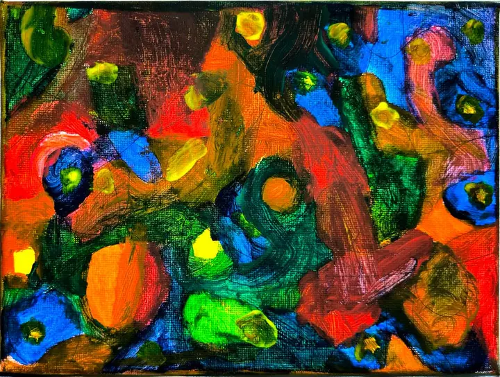
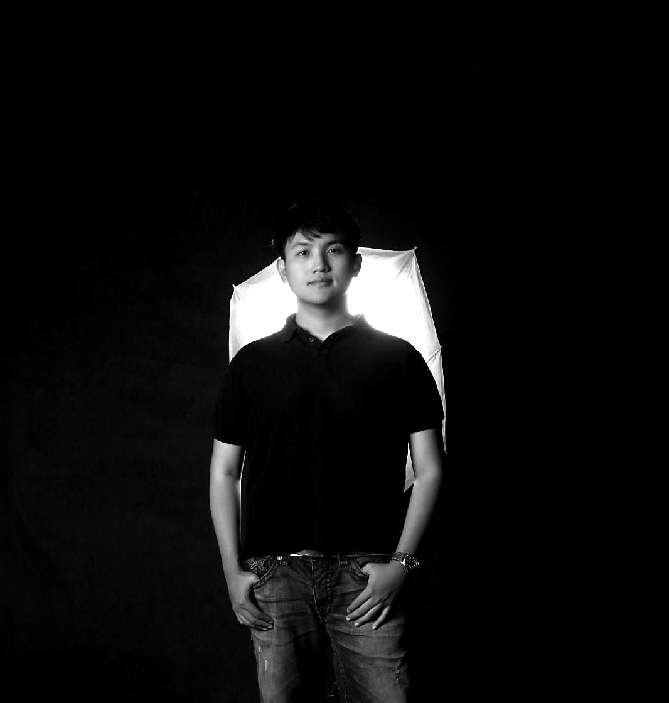

the geometry of shibuya-kei
analog warmth in digital workspaces. on cornelius, pizzicato five, and the pleasure of finding a rhythm to think in.
i build things and pay attention.
to how systems fail. how music feels.
and everything interesting in between.
i collect sounds and pay attention.
to vinyl dust. the cut of a jacket.
and the quiet beauty of everyday craft.

from software workflows
to the materials around us.
3m bio-mask · circular biomaterials
schneider hotsand · clean thermal microgrid
product operations workspace · ai workflows

i'm krishna, a product manager based in jakarta, with a background in industrial engineering at itb.
murphy's law is my working philosophy: think through what can go wrong, leave a little slack, and help people recover. outside the systems, you'll find me painting, collecting songs, or thinking about the way a jacket falls.
two lenses. the same curiosity.